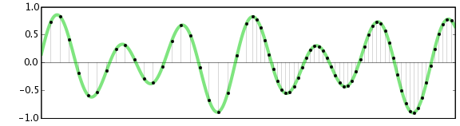

Digital Audio Fundamentals
From Audacity Manual
Digital audio brings analog sounds into a form where they can be stored and manipulated on a computer. Audacity is a software program for editing, mixing, and applying effects to digital audio recordings.
Digital Sampling
All sounds we hear with our ears are pressure waves in air. Starting with Thomas Edison's demonstration of the first phonograph in 1877, it has been possible to capture these pressure waves onto a physical medium and then reproduce them later by regenerating the same pressure waves. Audio pressure waves, or waveforms, look something like this:
Analog recording media such as a phonograph records and cassette tapes represent the shape of the waveform directly, using the depth of the groove for a record or the amount of magnetization for a tape. Analog recording can reproduce an impressive array of sounds, but it also suffers from problems of noise. Notably, each time an analog recording is copied, more noise is introduced, decreasing the fidelity. This noise can be minimized but not completely eliminated.
Digital recording works differently: it samples the waveform at evenly-spaced timepoints, representing each sample as a precise number. Digital recordings, whether stored on a compact disc (CD), digital audio tape (DAT), or on a personal computer, do not degrade over time and can be copied perfectly without introducing any additional noise. The following image illustrates a sampled audio waveform:
Digital audio can be edited and mixed without introducing any additional noise. In addition, many digital effects can be applied to digitized audio recordings, for example, to simulate reverberation, enhance certain frequencies, or change the pitch.
Audacity's ability to play or record audio directly from your computer depends on your specific computer hardware. Most desktop computers come with a soundcard with 1/8" jacks for you to plug in a microphone or other source for recording, and speakers or headphones for listening. Many laptop computers have speakers and a microphone built-in. The soundcard that comes with most computers is not particularly high quality, in this case you may want to consider using an external USB soundcard. For information on how to set up Audacity for playback and recording, see Audacity Setup and Configuration.
Digital Audio Quality
The quality of a digital audio recording depends heavily on two factors: the sample rate and the sample format or bit depth. Increasing the sample rate or the number of bits in each sample increases the quality of the recording, but also increases the amount of space used by audio files on a computer or disk.
Sample rates
Sample rates are measured in hertz (Hz), or cycles per second. This value is the number of samples captured per second in order to represent the waveform. Higher sample rates allow higher audio frequencies to be represented. Provided that the sample rate is more than double the highest audio frequency present, the waveform can be reconstructed exactly from the digital samples. Frequencies that are more than half the sample rate cannot be correctly represented in digital samples, and, if present in the original audio, must be removed before converting to digital. "Half the sample rate" therefore represents an upper limit called the Nyquist frequency, and the analog waveform must be entirely below this limit to be correctly represented digitally. Analog frequencies at this limit or above cannot be correctly represented by the digital samples and would cause a kind of distortion called aliasing.
The human ear is sensitive to sound patterns with frequencies between approximately 20 Hz and 20000 Hz. Sounds outside that range are inaudible. Therefore a sample rate of 40000 Hz is the absolute minimum necessary to reproduce sounds within the range of human hearing. Higher rates (called oversampling) are usually used so as to allow adequate filtering to avoid aliasing artifacts around the Nyquist frequency.
The sample rate used by audio CDs is 44100 Hz. Human speech is intelligible even if frequencies above 4000 Hz are eliminated; in fact telephones only transmit frequencies between 200 Hz and 4000 Hz. Therefore a common sample rate for audio recordings is 8000 Hz, which is sometimes called speech quality. Note that very steep filtering (called an anti-aliasing filter) is required at the Nyquist frequency in order to prohibit signal above this cutoff point from being folded back into the audible range by the digital converter, and creating the distorting artifacts of aliasing noise.
The most common sample rates measured in Hz are 8000, 16000, 22050, 44100, 48000, 96000 and 192000. Sample rates can also be referred to in kHz or units of 1000 Hz. So in units of kHz the most common rates are expressed as 8 kHz, 16 kHz, 22.05 kHz, 44.1 kHz, 48 kHz, 96 kHz and 192 kHz.
Audacity supports any of these sample rates, however most computer soundcards are limited to no more than 48000 Hz, 96000 Hz or sometimes 192000Hz. Again, the most common sample rate by far is 44100 Hz and many cards will thus default to this rate, whatever other rates they support.
In the image below, the left half has a low sample rate, and the right half has a high sample rate (ie. high resolution):
- 
Sample formats
The other measure of audio quality is the sample format (or bit depth), which is usually measured by the number of computer bits used to represent each sample. The more bits that are used, the more precise the representation of each sample. Increasing the number of bits also increases the maximum dynamic range of the audio recording, in other words the difference in volume between the loudest and softest possible sounds that can be represented.
Dynamic range is measured in decibels (dB). The human ear can perceive sounds with a dynamic range of at least 90 dB. However, whenever possible it is a good idea to record digital audio with a dynamic range of far more than 90 dB, in part so that sounds that are too soft can be amplified for maximum fidelity. Note that although signals recorded at generally low levels can be raised (that is, normalized) to take advantage of the available dynamic range, the recording of low level signals will not use all of the available bit depth. This loss of resolution cannot be re-captured simply by normalizing the overall level of the digital waveform.
Common sample formats, and their respective dynamic range include:
- 8-bit integer: 48 dB
- 16-bit integer: 96 dB
- 24-bit integer: 145 dB
- 32-bit floating point: near-infinite dB
Note that there are practical limitations on dynamic range due to the capabilities of the hardware and input and output converters. These make the practical limit more like 90 dB for 16-bit.
Other sample formats such as ADPCM approximate 16-bit audio with compressed 4-bit samples. Audacity can import many of these formats, but they are rarely used because of much better newer compression methods.
Audio CDs and most computer audio file formats use 16-bit integers. Audacity uses 32-bit floating-point samples internally and, if required, converts the sample bit depth when the final mix is exported. Audacity's default sample format during recording can be configured in the Quality Preferences or set individually for each track in the Audio Track Dropdown Menu. During playback, the audio in any tracks that have a different sample format from the project will be resampled on the fly using the Real-time Conversion settings in the Quality Preferences. The High-quality Conversion settings are used when processing, mixing or exporting.
In the image below, the left half has a sample format with few bits, and the right half has a sample format with more bits. If you think of the sample rate as the spacing between vertical gridlines, the sample format is the spacing between horizontal gridlines.
Size of audio files
Audio files are very large, probably much larger than most files you work with (unless you work with video files). To determine the size of an uncompressed audio file, multiply the sample rate (for example 44100 Hz) by the sample format bit rate (for example 16-bit) by the number of channels (2 for stereo) by the number of seconds. A completely full 74-minute stereo audio CD takes up over 6 billion bits. Divide this by 8 to get the number of bytes; an audio CD is a little less than 800 megabytes (MB). See compressed audio below.
Clipping
One limitation of digital audio is that for most purposes it cannot deal with sound pressure waves that exceed the maximum levels it is designed to deal with. When a signal is recorded that exceeds the maximum level of +/-1.0 linear or 0 dB, samples outside the range are clipped to the maximum value, like this:
A sound recorded with clipping will sound distorted and harsh. While there are some techniques that can eliminate a small amount of noise due to clipping, it is always preferable to avoid clipping while recording. Change the volume on your input source (microphone, cassette player, record player) and set Audacity's input volume control (in Mixer Toolbar) such that the waveform is as large as possible (for maximum fidelity) without clipping.
Note that at Audacity's default 32-bit float sample format, legitimately captured sample values in excess of the maximum can be stored but even if preserved in an exported 32-bit float file they will probably still distort on any conventional reproducing equipment. If Audacity encounters legitimate samples above the limit, the Amplify effect will show a negative default "Amplification (dB)" value and you may click OK at this setting to reduce the peak amplification to the maximum 0 dB without loss of the original peaks of the waveform.
Compressed Audio
Because digital audio files are so large, reduced sample rates were typically used whenever possible. In 1991, the MP3 (MPEG I, layer 3) standard changed everything. MP3 is a lossy compression technique that can dramatically reduce the file size of a digital audio file with surprisingly little effect on the quality. One second of CD-quality audio takes up 1.4 megabits, while a common bit rate for MP3 files is 128 kbps, which is a compression factor of more than 10x! MP3 works by cleverly "throwing away" details about the audio waveform that humans are not very sensitive to, based on a psychoacoustic model of how our ears and brains process sounds. All MP3 files are not created alike; different psychoacoustic models will lead to different amounts of perceived distortion in the audio file.
Audacity as shipped can import MP3 files but please add the optional LAME MP3 encoding library to your computer in order to export MP3 files from Audacity.
With good speakers, most people can hear the difference between a 128 kbps MP3 and an uncompressed audio file from a CD. 256 kbps and 320 kbps MP3 files are more popular among audiophiles who prefer higher quality.
There are many other lossy compressed audio file formats. Audacity fully supports the Ogg Vorbis format, which is similar to MP3 but is a completely open, patent-free standard. Over time the quality of Ogg Vorbis files has come to surpass the quality of MP3, and its format is more extensible so more improvements are possible. Ogg Vorbis is a great choice for your own audio, however the reality is that many more devices such as iPods and other portable audio players support MP3 but not Ogg Vorbis yet.
Other well-known compression methods include ATRAC, used by Sony MiniDisc recorders, Windows Media Audio (WMA), and AAC. Audacity supports more formats by adding the optional FFmpeg library.